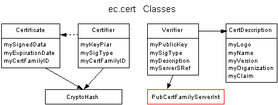

Last updated:[98/05/18 MES]
Mike Slominski: mike@communities.com.
At the highest level a certificate is proof that some organization thinks that some piece of data measures up to some standard. The organization could be a fictitious "Prudes-R-US", the piece of data could be some image, and the standard could be the claim that the data contains no nudity. Another example might be Javasoft, the data could be a java class, and the standard could be that objects of the class would not do mischievous things to your computer. EC certificates are themselves java objects and are currently used to determine if an object's appearance meets the entrance criteria of microcosm regions.
See also the CertAgencySubsystem.
EC certificates must:
We may also want to give them a validity start date as well as and expiration date.
Here is an OMT diagram of the classes in the ec.cert package:

EC certificate description
An EC Certificate (ec.cert.Certificate) contains data that is signed with the private key of a Certificate Family using public/private key cryptography. Certificates are generated by the ec.cert.Certifier class - instances of which should be kept safe from exposure because they contain the Certificate Family's Private Key (as a part of the Key Pair). A certificate's integrity is checked by decrypting the signed data with the Certificate Family's public key. If the decryption fails then the data as been changed since it was signed or, it was not signed correctly by the public key's matching private key. This check is done by the ec.cert.Verifier class which also contains data about the Certificate Family and holds a remote reference back to its' family's server. A private key and its' matching public key taken together are often called a Key Pair. Each certificate contains a Certificate Family ID which is just a ec.cert.CryptoHash of the Certificate Family's Public Key.
Certificate family and Certification Authorities
Certificates come in families. There are an infinite number of possible public/private key pairs that could be used to generate certificates, each key pair used to create certificates defines a family. To beat a dead horse, if certificates are generated for two different objects by the same private key, they are said to be in the same certificate family and are verified by the same public key. There is a one-to-one match between a certificate family and a key pair.
Certificates are generated by Certification Authorities. A Certification Authority is the name to any organization or individual that is in the business of certifying stuff (e.g. EC, Verisign, or Prudes-R-Us). Certification Authorities first decide what standards they want to guarantee and then for each standard they generate a new certificate family. So Prudes-R-Us in combination with its' "No Nudity" standard would define a certificate family with its' own public/private key pair. If Prudes-R-Us had another standard, say "No Cigarettes", they would generate a different certificate family with a different key pair for that standard. If Disney maintained a certification authority that had it own "No Nudity" standard, they would define their own certificate family separate from Prudes-R-Us "No Nudity" family. The infrastructure to support this is in ec.app.cert.
What is a CryptoHash
While the data that is signed can be anything that can be turned into a byte array (e.g. an image, a serialized Appearanc2d object, just about anything), it is usually a CryptoHash (a.k.a. fingerprint, Message Digest, or just Digest) of the object instead. This is done to save space. The CryptoHash of an object is generally much smaller (20 bytes in our case) than the full object but is unique to the object it is derived from: the CryptoHash's claim to fame is that no two objects will produce the same CryptoHash unless they are identical. Also, another property of a CryptoHash is that it reveals no information about the objects that it was derived from which makes it safe to expose when it may not be safe reveal the object itself.
EC Certificates and how we use them
In microcosm, only an object's appearance is certified and checked for certification. If an object tries to gain entrance to a region that requires one or more certificates for entrance, the region's Terms Of Service (TOS) enforcement mechanism will not allow the object to enter unless its' appearance has been certified with a satisfactory certificate type. Certificates are stored in the same repositories that the microcosm art is stored in. When microcosm starts up, the startup routines generate "data holders" to reference the appearance data for microcosm objects and, at that time, any certificates for the appearance data are also stored in these data holders. Also at startup time, verifiers for the certificate families being used are given to TOS checkers. EC's certification use several of sun's JDK 1.1.x security classes.
I believe this package is essentially done. Moving to an appropriate standard, if one should develop, would be something to keep in mind.
Java has its' own certificates that look a lot like X.509 certificates. There are also several other implementations of x509 certificates including one that comes with the cryptix package. The problem with X.509 certificates is that they seem to be defined to only certify identity (public keys) and not general data. They serve a different purpose than EC certificates. As far as I can tell, X.509 certificates are never used for signing data/objects directly. For example, Even though Netscape uses X.509 certificates for ID verification, they support the certification of objects through "object signing". What they do is to cryptographically sign an object and then use X.509 certification to certify the signer.
EC certificates currently use DSA public/private key technology as implemented by sun and assumes this is secure.
There is only one bit of E code and that is in Verifiers which contain a StrudyRef back their CertFamilyServer and a SturdyRef is E code. In the full implementation of the Certification Architecture, Verifiers would have called several E methods on their CertFamilyServers.